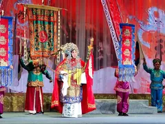
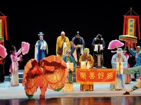
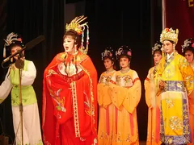
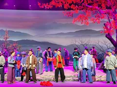
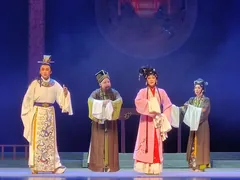

非遗图鉴 / 梨园粉墨
04
非遗图鉴 · 传统戏剧
梨园粉墨
传统戏剧 · 171 项、473 子项 · 第 3 / 3 页（Ⅳ-121 至 Ⅳ-171）
每一条只列名录上的事实：编号、名称、申报地区或单位、公布年份和批次。详情看中国非物质文化遗产网的官方页。在名录检索里查这一门类 →
- Ⅳ-121
徐州梆子
- 江苏省徐州市2008 第二批 · 新增项目官方页 →

穆桂英挂帅 出征图：Augusthaiho / CC BY-SA 4.0 / 维基共享资源。本站已缩放裁切，按 CC BY-SA 4.0 同样许可共享。 - Ⅳ-122
同州梆子
- 陕西省大荔县2008 第二批 · 新增项目官方页 →
- Ⅳ-123
- Ⅳ-124
二股弦
- 河南省武陟县2008 第二批 · 新增项目官方页 →
- Ⅳ-125
- Ⅳ-126
提琴戏
- 湖北省崇阳县2008 第二批 · 新增项目官方页 →
- Ⅳ-127
- Ⅳ-128

员外乐善好施获嘉奖图：Augustokremo / CC BY-SA 4.0 / 维基共享资源。本站已缩放裁切，按 CC BY-SA 4.0 同样许可共享。 - Ⅳ-129
广东汉剧
- 广东汉剧院2008 第二批 · 新增项目官方页 →
- Ⅳ-130

Hainan Opera 30图：David Schroeter from Ormoc, Philippines / CC BY-SA 2.0 / 维基共享资源。本站已缩放裁切，按 CC BY-SA 2.0 同样许可共享。 - Ⅳ-131
黔剧
- 贵州省黔剧团2008 第二批 · 新增项目官方页 →

满才之子小鹏因为村里吃不上白米饭，惨遭女方退婚图：Augustohai / CC BY-SA 4.0 / 维基共享资源。本站已缩放裁切，按 CC BY-SA 4.0 同样许可共享。 - Ⅳ-132
- Ⅳ-133
合阳跳戏
- 陕西省合阳县2008 第二批 · 新增项目官方页 →
- Ⅳ-134
武都高山戏
- 甘肃省陇南市2008 第二批 · 新增项目官方页 →
- Ⅳ-135
佤族清戏
- 云南省腾冲县2008 第二批 · 新增项目官方页 →
- Ⅳ-136
彝剧
- 云南省大姚县2008 第二批 · 新增项目官方页 →
- Ⅳ-137
白剧
- 云南省大理白族自治州2008 第二批 · 新增项目官方页 →
- Ⅳ-138
邕剧
- 广西壮族自治区南宁市2008 第二批 · 新增项目官方页 →
- Ⅳ-139
上党二簧
- 山西省晋城市城区2011 第三批 · 新增项目官方页 →
- Ⅳ-140
醒感戏
- 浙江省永康市2011 第三批 · 新增项目官方页 →
- Ⅳ-141
湖剧
- 浙江省湖州市2011 第三批 · 新增项目官方页 →
- Ⅳ-142
淳安三角戏
- 浙江省淳安县2011 第三批 · 新增项目官方页 →
- Ⅳ-143
嗨子戏
- 安徽省阜南县2011 第三批 · 新增项目官方页 →
- Ⅳ-144
赣剧
- 江西省赣剧院2011 第三批 · 新增项目官方页 →

佳姝（孔丽萍 饰）被皇帝选为女史，父母让其和舜卿（廖聪 饰）见最后一面图：Augustohai / CC BY-SA 4.0 / 维基共享资源。本站已缩放裁切，按 CC BY-SA 4.0 同样许可共享。 - Ⅳ-145
西河戏
- 江西省星子县2011 第三批 · 新增项目官方页 →
- Ⅳ-146
鹧鸪戏
- 山东省淄博市临淄区2011 第三批 · 新增项目官方页 →
- Ⅳ-147
淮调
- 河南省安阳县2011 第三批 · 新增项目官方页 →
- Ⅳ-148
落腔
- 河南省内黄县2011 第三批 · 新增项目官方页 →
- Ⅳ-149
武当神戏
- 湖北省丹江口市2011 第三批 · 新增项目官方页 →
- Ⅳ-150
雷剧
- 广东省雷州市2011 第三批 · 新增项目官方页 →
- Ⅳ-151
关索戏
- 云南省澄江县2011 第三批 · 新增项目官方页 →
- Ⅳ-152
通渭小曲戏
- 甘肃省通渭县2011 第三批 · 新增项目官方页 →
- Ⅳ-153
弦子腔
- 陕西省平利县2011 第三批 · 新增项目官方页 →
- Ⅳ-154
西路梆子
- 河北省海兴县2011 第三批 · 新增项目官方页 →
- Ⅳ-155
- Ⅳ-156
- Ⅳ-157
- Ⅳ-158
海南斋戏
- 海南省海口市2011 第三批 · 新增项目官方页 →
- Ⅳ-159
线腔
- 山西省芮城县2014 第四批 · 新增项目官方页 →
- Ⅳ-160
平讲戏
- 福建省福安市2014 第四批 · 新增项目官方页 →
- Ⅳ-161
永修丫丫戏
- 江西省永修县2014 第四批 · 新增项目官方页 →
- Ⅳ-162
东河戏
- 江西省赣县2014 第四批 · 新增项目官方页 →
- Ⅳ-163
南路丝弦
- 河北省邢台市2021 第五批 · 新增项目官方页 →
- Ⅳ-164
吉剧
- 吉林省2021 第五批 · 新增项目官方页 →
- Ⅳ-165
满族新城戏
- 吉林省松原市2021 第五批 · 新增项目官方页 →
- Ⅳ-166
杂剧作场戏
- 福建省三明市2021 第五批 · 新增项目官方页 →
- Ⅳ-167
宁河戏
- 江西省九江市修水县2021 第五批 · 新增项目官方页 →
- Ⅳ-168
- Ⅳ-169
白族吹吹腔
- 云南省大理白族自治州云龙县2021 第五批 · 新增项目官方页 →
- Ⅳ-170
巴贡
- 巴贡（霞尔巴贡）西藏自治区日喀则市2021 第五批 · 新增项目官方页 →
- Ⅳ-171
土生土语话剧
- 澳门特别行政区2021 第五批 · 新增项目官方页 →